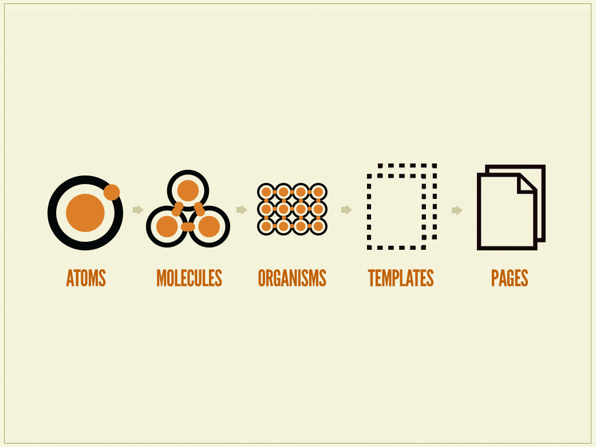
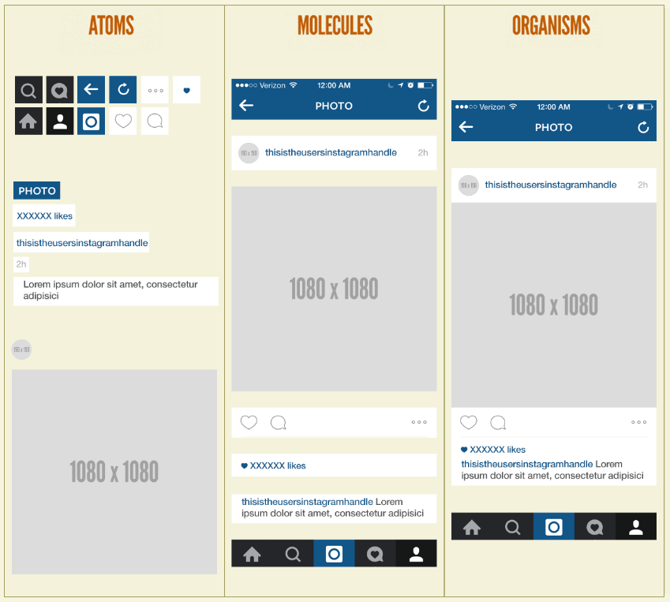
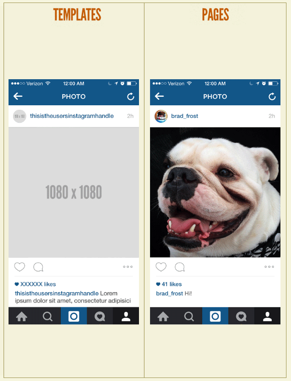
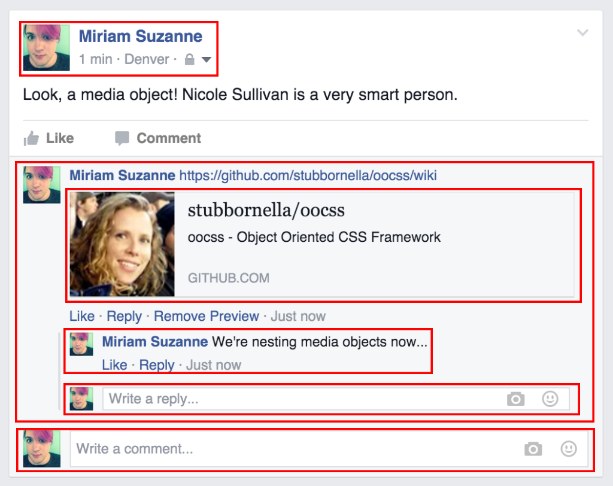
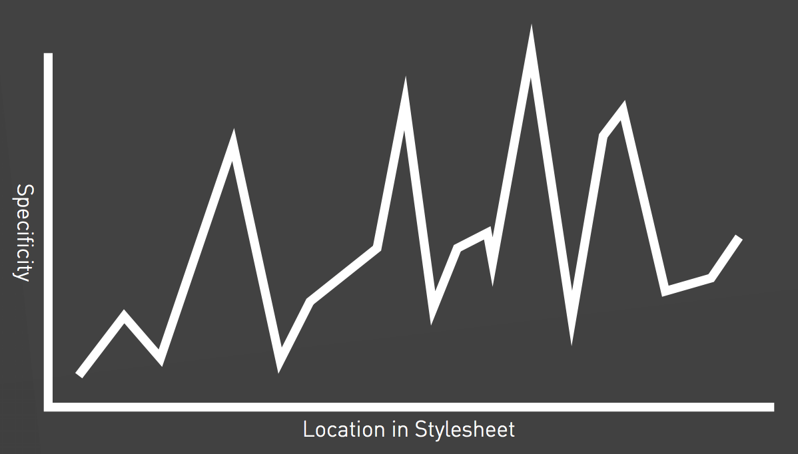
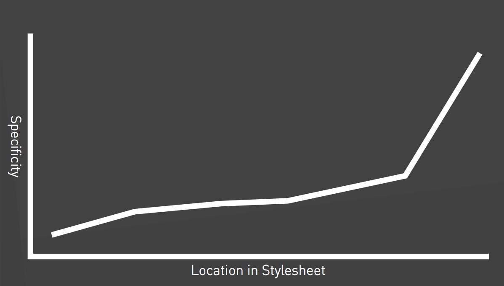
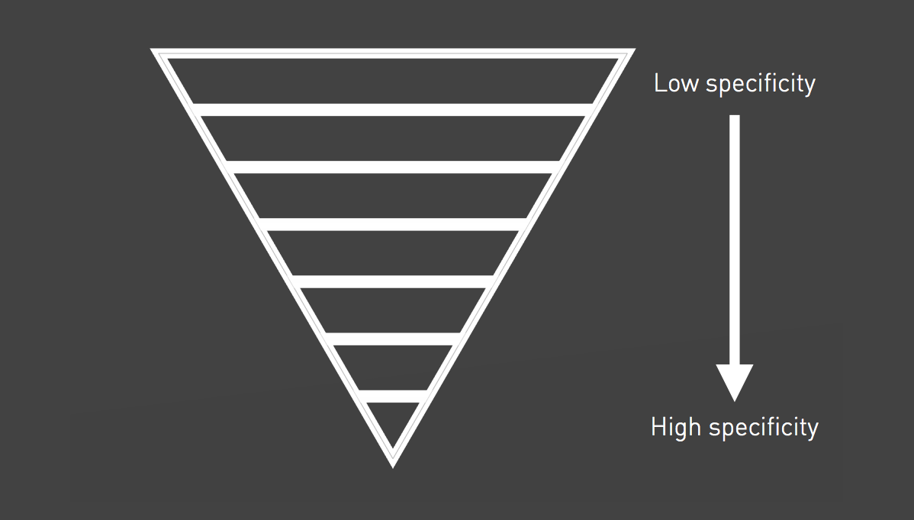
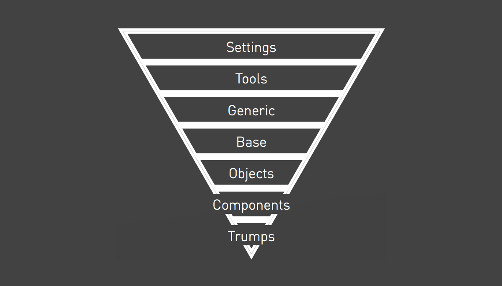
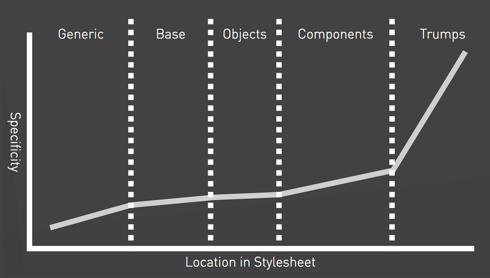

Sass and Modern Front-end Development
Warm up
What is Sass?
- Sass is a stylesheet language that is an extension of CSS
- Sass = Syntactically Awesome Style Sheets
- It is one of a few CSS preprocessors
 a few
a few
others...
CSS Pre- and Postprocessors
Ruby Sass and LibSass
Two primary implementations of the Sass compiler:
- They are both official
- The latest versions should be fully interoperable
- New features will be released in tandem
*LibSass has wrappers for Go, Java, JavaScript, Lua, .Net, Node, Perl, PHP, Python, Scala, and even Ruby.
 node-sass (LibSass)
node-sass (LibSass)
- Install Node.js (nodejs.org)
npm install node-sass(npmjs.com)
node-sass input.scss output.css
node-sass --watch input.scss output.css
node-sass --watch sass/ --output stylesheets/
The Two Syntaxes of Sass
.sass
$font-stack: Helvetica, sans-serif
$primary-color: #333
body
font: 100% $font-stack
color: $primary-color
.scss
$font-stack: Helvetica, sans-serif;
$primary-color: #333;
body {
font: 100% $font-stack;
color: $primary-color;
}
Variables
Data Types
| string | "Hello world" , kittens |
| number | 42 , 1337px |
| color | #CF649A , pink , rgb(1, 33, 7) |
| list | (a, b, c) , a b c |
| map | (a: 1, b: 2) |
| bool | true or false |
| null | null |
Scope
$padding: 10px;
.module {
$padding: 20px;
padding: $padding; // 20px
}
.foo {
padding: $padding; // 10px
}
- A variable defined in a mixin, function, or rule set is local
- A global and a local variable can share the same name
Scope
$padding: 10px;
.module {
$padding: 20px !global;
padding: $padding; // 20px
}
.foo {
padding: $padding; // 20px
}
Use the !global flag to override a global variable
Scope
$margin: 30px;
$margin: 40px !default;
.module {
margin: $margin; // 30px
}
.foo {
margin: $margin; // 30px
}
Use the !default flag to assign a variable if it doesn’t have a value yet
Variable Interpolation: #{}
$name: 'world';
.foo:before { content: 'Hello ' + $name + '!'; /* Hello world! */}
.bar:before { content: 'Hello #{$name}!'; /* Hello world! */}
.main {
$sidebar-width: 300px;
width: calc(100% - $sidebar-width); // calc(100% - $sidebar-width)
}
.main {
$sidebar-width: 300px;
width: calc(100% - #{$sidebar-width}); // calc(100% - 300px)
}
$section: 'home';
.section-#{$section} {
background: transparent;
}
Recap Variables
- Variables are awesome as in other languages
- 7 data types with different operators and built-in functions
- Think about scoping,
!global,!default - Use interpolation to directly evaluate variables
Functions and Mixins
Built-in Functions
mix($color1, $color2, [$weight]), lighten($color,
$amount), darken($color, $amount), invert($color), transparentize($color, $amount),
quote($string), str-length($string), str-slice($string,
$start-at, [$end-at]), to-upper-case($string),
round($number), ceil($number), floor($number), random([$limit]), length($list),
nth($list, $n), append($list1, $val, [$separator]), index($list, $value),
map-get($map, $key), map-values($map), keywords($args),
selector-nest($selectors…), selector-parse($selector), type-of($value),
variable-exists($name), function-exists($name), unit($number),
call($name, $args…), unique-id()
and many more ...
Custom Functions
// `$a` is mandatory and `$b` is optional (default value being 2)
@function multiply($a, $b: 2) {
@return ($a * $b);
}
- A function must contain at least one return statement
- Function parameters are optional
- Optional parameters must come after non-optional parameter
- Scoping is similar to variables
Function Example: Asset Management
// CDN URL where all assets are served from
$base-url: 'http://cdn.example.com/assets/';
// Native `url(..)` function wrapper
@function asset($base, $type, $path) {
@return url($base + $type + $path);
}
// Returns URL to an image based on its path
@function image($path, $base: $base-url) {
@return asset($base, 'images/', $path);
}
.foo {
background-image: image('kittens.png');
}
.foo {
background-image:
url('http://cdn.example.com/assets/images/kittens.png');
}
Mixins
A mixin is a function that can output
code rather than return a result.
abstract repeated style patterns
abstract a repeated operation
- Ability to adapt the output based on parameters
- Can not be defined inside a function or another mixin
- When mixins have no parameters, the parentheses are optional
Mixins
/// Sizing mixin from width and height
/// If height is omitted, same as width
@mixin size($width, $height: $width) {
width: $width;
height: $height;
}
// Usage
.foo {
@include size(100%, 42px);
}
.bar {
@include size(100px);
}
.foo {
width: 100%;
height: 42px;
}
.bar {
width: 100px;
height: 100px;
}
@content directive
@mixin size($width, $height: $width) {
width: $width;
height: $height;
@content;
}
.foo {
@include size(100%, 42px) {
font-size: 2rem;
}
}
.foo {
width: 100%;
height: 42px;
font-size: 2rem;
}
Recap Functions and Mixins
- There are a lot of built-in functions to help out
- Custom functions are a powerful tool to abstract repeated operations
- Mixins are great to abstract repeated style patterns
- Use
@contentto pass styles to a mixin
Loops and Conditions
Conditions
@if $condition {
// Then do something
} @else {
// Do something else
}
@if $condition-a {
// Then do something
} @else if $condition-b {
// Then do something else
} @else {
// Do something else
}
$foo: true;
$bar: false;
@if $foo and $bar {
// Statement doesn't match
}
@if $foo or $bar {
// Statement does match
}
$foo: if($error, red, green);
The for-loop
@for $i from 1 through 5 {
// Code to execute 5 times, where `$i` equals: 1, 2, 3, 4, 5
}
- The
@fordirective - The name of the index variable
- The keyword
from - The start index (a number, a variable, or a function call)
- Either the keyword
through(end index inclusive) or the keywordto(end index exclusive) - The end index (a number, a variable, or a function call)
$start: 2;
$list: (20em, 17em, 15em, 12em);
@for $index from $start to length($list) {
// Code to execute 2 times, where `$index` equals: 2, 3
}
The each-loop
$collection: (a b c d e f g);
@each $item in $collection {
// Do something with `$item`
}
- The
@eachdirective - The name of the item variable(s)
- The keyword
in - The collection to iterate over
The each-loop
$preprocessors: (sass, #C6538C),
(less, #1D365D),
(stylus, #333333);
@each $preprocessor, $color in $preprocessors {
.preprocessor-#{$preprocessor} {
color: $color;
}
}
The while-loop
$number: 4;
@while ($number > 0) {
// Do something with `$number`
$number: $number - 1;
}
- The
@whiledirective - The matching condition for the loop to keep going
Recap Loops and Conditions
- Conditional statements are used to execute a block of code based on a condition
-
Loops are used to repeat a block of code
- a certain number of times
- or to iterate over a collection such as a list or a map
Nesting
Selector Nesting
.container {
margin: 0 auto;
max-width: 42em;
padding: 0 1em;
}
.container p,
.container li {
text-indent: 1em;
}
.container {
margin: 0 auto;
max-width: 42em;
padding: 0 1em;
p, li {
text-indent: 1em;
}
}
Parent Selector Reference: &
.foo {
margin: 1em;
.bar { margin: 0 auto; }
}
.foo { margin: 1em; }
.foo .bar {
margin: 0 auto;
}
.foo {
margin: 1em;
&.bar { margin: 0 auto; }
}
.foo { margin: 1em; }
.foo.bar {
margin: 0 auto;
}
a {
color: deeppink;
&:hover { color: hotpink; }
&:before { content: '42 '; }
}
Context Nesting
.navigation li {
display: block;
}
@media screen and (min-width: 42em) {
.navigation li {
display: inline-block;
}
}
.navigation li {
display: block;
@media screen and (min-width: 42em) {
display: inline-block;
}
}
.navigation {
display: block;
@supports (display: flex) {
display: flex;
}
}
Recap Nesting
- Nesting is a powerful feature that should not be abused
- It could potentially harm readability and maintainability
- Try to avoid using unnecessary nesting, keep it mostly for pseudo-classes, pseudo-elements,
and contexts (
@mediaand@supports)
The @extend Directive
@extend
@extend is the most powerful, dangerous and
controversial feature in Sass.
.message {
border: 1px solid #ccc;
padding: 10px;
color: #333;
}
.success {
@extend .message;
border-color: green;
}
.error {
@extend .message;
border-color: red;
}
.message, .success, .error {
border: 1px solid #cccccc;
padding: 10px;
color: #333;
}
.success {
border-color: green;
}
.error {
border-color: red;
}
The Placeholder Selector: %
%message {
border: 1px solid #ccc;
padding: 10px;
color: #333;
}
.success {
@extend %message;
border-color: green;
}
.error {
@extend %message;
border-color: red;
}
.success, .error {
border: 1px solid #cccccc;
padding: 10px;
color: #333;
}
.success {
border-color: green;
}
.error {
border-color: red;
}
Advanced Extending
.hoverlink {
@extend a:hover;
}
a {
&[href*='http://'] {
&:hover {
text-decoration: underline;
}
}
}
a[href*='http://']:hover,
[href*='http://'].hoverlink {
text-decoration: underline;
}
The Limits of Extending
Don’t try this at home!
Specificity
%large { font-size: 4rem; }
%small { font-size: 0.75rem; }
.message { @extend %small; }
.important { @extend %large; }
.important { font-size: 4rem; }
.message { font-size: 0.75rem; }
Media Query Madness
@extend fails to work at all across media queries. Selectors inside one media query cannot extend
selectors outside that same query (and vice versa).
The Limits of Extending
Don’t try this at home!
Hard-to-Read Output
.typography {
.bold { font-weight: bold; }
}
.widget-warning strong { @extend .bold; }
.widget-info strong { @extend .bold; }
.alert-error .important { @extend .bold; }
.typography .bold,
.typography .widget-warning strong,
.widget-warning .typography strong,
.typography .widget-info strong,
.widget-info .typography strong,
.typography .alert-error .important,
.alert-error .typography .important {
font-weight: bold;
}
Recap @extend
"With great power comes great responsibility"
-
Try to use
@extendjust in an encapsulated environment- extend a specific selector only in a specific component
- or at least do not extend the same selector in multiple sass files
- Use placeholder whenever possible
- If you do not have a good reason to use
@extend, use a mixin, it will do the job
Multiple Files and Folders
Imports and Partials
sass/
|
|– config/
| |– _colors.scss
| …
|
|– layout/
| |– _navigation.scss
| …
|
|– modules/
| |– _calendar.scss
| |– _contact.scss
| …
|
|– patterns/
| |– _buttons.scss
| …
|
|- main.scss
// main.scss
@import 'config/_colors.scss';
@import 'patterns/_buttons';
@import 'layout/navigation';
@import 'modules/calendar',
'modules/contact';
SMACSS
Scalable and Modular Architecture for CSS
SMACSS
SMACSS uses five categories for organizing CSS:
- Base rules define the default style of elements
- Layout styles are used to break the document into sections
- Modules are the individual components of a design
- State rules define different JavaScript-dependent states
- Themes to describe multiple style options for the same modules
SMACSS
Naming Rules
Use a prefix to differentiate between Layout, State, and Module rules.
-
For layout selectors use
l-orlayout- -
is-as inis-hiddenoris-collapsedfor state rules -
A prefix like
module-for every module would be needlessly verbose, so no prefixes for modules
Atomic Design
Atomic Design
Atomic Design
Atomic Design
OOCSS
Object Oriented CSS
OOCSS
-
Separate structure and skin
Define repeating visuals (backgrounds, border styles, etc.) as separate “skins” that you can mix-and-match with various objects to achieve a large amount of visual variety. By styling classes (
.primary-header) instead of tags (h1), you have more flexibility. -
Separate container and content
OOCSS objects should not be dependent on their location or context, but be reusable and able to fill whatever container they are given. This ensures that an object will look the same in any context, without developers having to guess what a given element or class will do in different situations.
OOCSS
Media Object (Facebook)
ITCSS
Inverted Triangle CSS
ITCSS
CSS Specificity

trumps them all
ITCSS
ITCSS
ITCSS
ITCSS
ITCSS
BEM
Block, Element, Modifier
BEM
Blocks
Blocks are components of any size, and can be nested inside each other. Blocks are reusable and independent.
Block class names may consist of letters, digits and dashes.
...
.block {
color: hotpink;
}
BEM
Elements
Elements are the constituent parts that belong to a specific block.
Element classes are formed as block name plus two underscores (__) plus element name.
...
...
...
.block {
color: hotpink;
}
.block__elem {
color: deeppink;
}
.block {
color: hotpink;
&__elem {
color: deeppink;
}
}
BEM
Modifiers
Modifiers are flags on blocks or elements that change their appearance, behavior or state.
Modifier class names are formed as block name plus two dashes (--) plus modifier name or element name plus two dashes plus modifier name.
BEM
Modifiers
...
...
...
.block { ... }
.block--mod { ... }
.block__foo { ... }
.block__foo--mod { ... }
.block__bar { ... }
.block--mod .block__bar { ... }
.block { ...
&--mod { ... }
&__foo { ...
&--mod { ... }
}
&__bar { ... }
&--mod &__bar { ... }
}
Recap Front-end Development Methodologies
What do the methodologies have in common?
- Categorise styles
- Component based
- Context independent
- Naming conventions
- Specificity
Code Quality
- Correctness
- Reusability
- Reliability
- Performance
- Testability
- ...
Optimise for
Change
Maintainability First!
Thanks!
Sources
Sources
Sources
- https://www.sitepoint.com/introducing-our-newest-book-jump-start-sass
- https://abookapart.com/products/sass-for-web-designers
- http://sass-lang.com
- http://thesassway.com
- https://smacss.com
- http://bradfrost.com/blog/post/atomic-web-design
- http://atomicdesign.bradfrost.com/chapter-2
- https://github.com/stubbornella/oocss/wiki
- https://www.sitepoint.com/architecture-in-sass
- http://csswizardry.net/talks/2014/11/itcss-dafed.pdf
- https://css-tricks.com/specifics-on-css-specificity
- https://en.bem.info
- http://csswizardry.com/2013/01/mindbemding-getting-your-head-round-bem-syntax